📖 阅读信息
阅读时间：7 分钟 | 中文字符：2822 | 有效代码行数：4
我饿¶
问题的解答¶
课程大纲¶
看懂图片¶
电气原理图
安全回路原理图
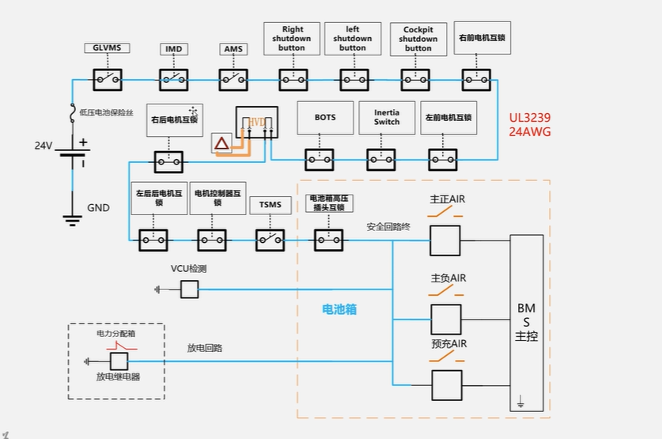
整车硬件逻辑图
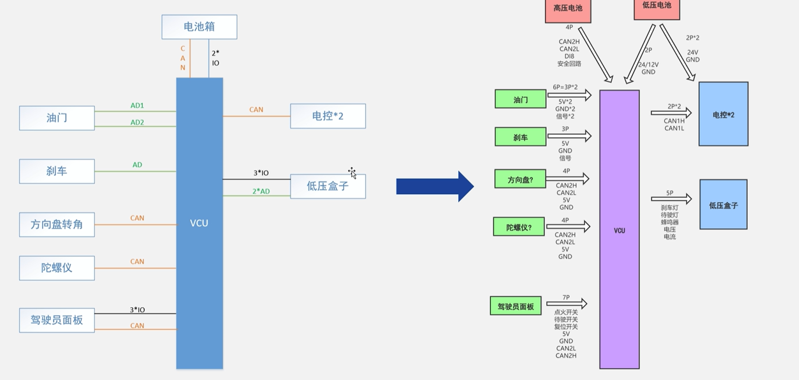

看懂字¶
全国大学生方程式竞赛的规则：
电池箱隔离继电器(AIR)的规则：
- 规则和检查表
- 电池电气的检查详解，有相应的参考答案（目标）
- 电气系统表：告诉组委会我们的答案是什么（提前提交纸质的，交给组委会进行提前的排查），之后会有一个审核的反馈表。只有文档通过才会有线下的车检的资格(ESF审核反馈表)相当于模拟考试
知乎：规则解释的文章：
电池¶
电池的基本参数¶
封装形式
软包电池（小批量的制作，比较贵），圆柱形的电池（单个的比较小，但是比较便宜，所以需要多个封装在一起），方壳电池
内部的结构
锂离子电池
电池的物理参数
电压
最高电压
额定电压
最低电压
电流
最大的放电电流
最大充电电流
倍率（与充电的时间相关）
容量
电池放电的性能：1A*h=3600C，代表能放出电子的数量
能量：
千瓦*时，简称为度
模组将电池分成子模块
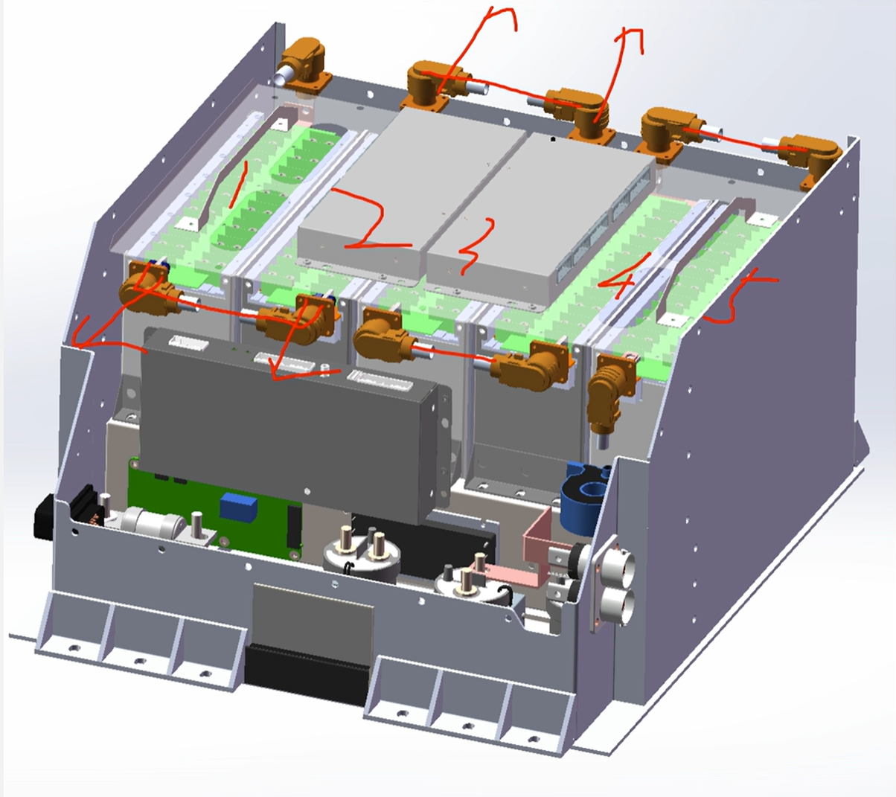
降低操作的危险性，将箱子分开时，最高的电压是小块的电压
方法：
- 铜排压接
- 手工电焊的方式
维护插头：
钴酸锂电池：昂贵，倍率高，危险
预充电和AIR¶

预充回路的电阻：功率电阻，短路所产生的比较大的功率，这种黄色的电阻，或者是陶瓷的功率电阻
电阻的过载能力
AIR：主正，主负的高压直流接触器（继电器）
有些会有四个线，有两个线是辅助的触电，描述主接触器的状态（同开同关的辅助触点），通过测量辅助触点的状态，确定继电器是否接通。（主辅助触点会比较高压）
高压屏蔽电缆：
耐磨，抗腐蚀，抗电磁干扰的功能
铜鼻子用螺母压在继电器的圆面上，必须主动锁紧，
IMD和电压变送器¶
IMD¶
绝缘是什么？两个物体之间的电压过小是，就不会绝缘
车上的绝缘故障就是：高压和低压部分的电阻过小

理论上的绝缘电阻是无穷大，但是只要电阻够大就好了
IMD为绝缘检测装置
官方指定的零件型号
double check 电池箱上的一些地方可能没有接地
会有一个相应阈值，选择一个型号（相应的）
但是，在绝缘故障消失之后，IMD的信号会自动复位
不过，不能使整个系统直接重新启动，而是应该必须重新手动启动
会使用到自锁的功能
驱动系统激活指示灯（TSAL）
指示驱动系统(TS)状态，告诉所有人，车上有没有高压
22年的规则是比较简单的
激活条件
AIR闭合（主正，主负）
预充继电器
上述的两种继电器使用辅助的触电就可以进行测量
但是，电机的控制器两边的电源不一定是电池箱，所以还要对两端的电压进行直接的测量（>60V时）
高压指示器，DC/DC，hvd和放电回路¶
高压和低压之间理论上存在电阻
通过车架来接地
BSPD¶
低压系统¶
继电器的控制：

继电器：bspd，imd，ams
现在讲的是bspd
制动系统优先驱动
- 加速踏板传感器：APPS，滑动变阻器

先通过滑动变阻器的模拟信号（连续的电路的信号）
- 刹车：线位移传感器
为什么油门和刹车的传感器不一样
油门有着两路滑动变组器，是一个冗余的设计（为了防止一个出现问题），油门是纯电子的控制
但是刹车是完全机械的控制，没有刹车的传感器，依旧能够刹车
但是油门的深浅不能完全代替电机的工作状态
刹车上也是同样的问题
也有可能是电机卡住了这样的问题

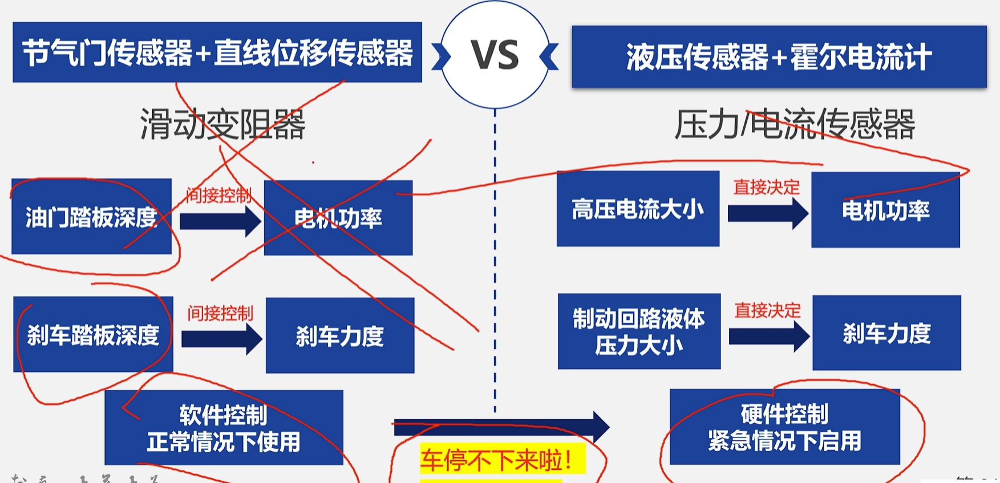
将电机的功率直接使用电流的大小来代替
将刹车力度的大小直接使用制动液的压力大小来展现
这种形式比较直接
所以，在电流大小很大；压力大小也很大的时候就要实现断开的效果
所以做的事是让电机不在转动，所以电机卡在全功率的状态，应该将电机的高压电断开。
BSPD
BMS¶

- 改进：
- 引入pcb的单体电压采集板
- 减少拆装的难度
但是还是有实体的线
-
自制的BMS
封装吗，尽量无线

控制功能¶
控制air，高压继电器线圈的GND信号，什么时候接到gnd上
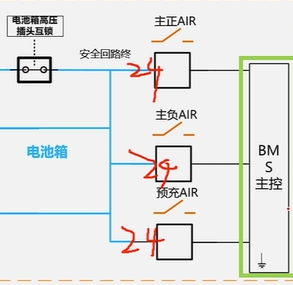
输出故障的信号¶
电路中的AMS指示灯
若电池管理系统断开了安全回路，那么需要点亮座舱中AMS的指示灯，且必须是自锁的，直到错误状态被手动重置
BMS的信号必须是系统的关键信号
如何控制信号灯呢——出现故障后，切断继电器，闭合K5输出低电平，对地导通。
没有故障的时候k5是悬空的
系统关键信号¶
又叫scs
对于k5信号的scs信号保护
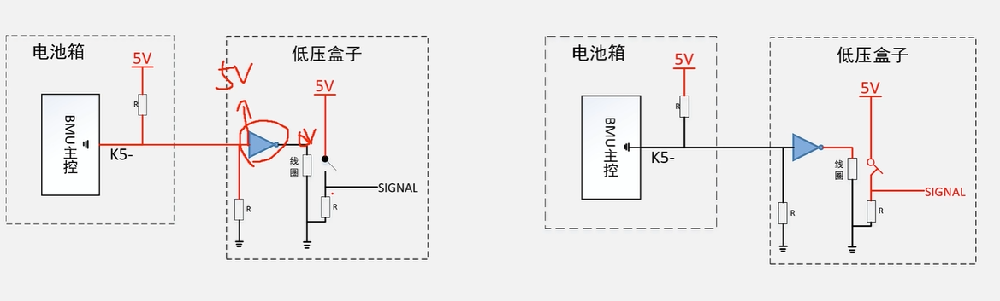
前者是没有故障的时候，signal为低电平，后者是有故障的时候，为高电平
开关下面的电阻为下拉电阻
二极管正极的电阻为下拉电阻，是线路断开的时候
辅助触点信号的scs保护¶
任何的scs信号的单点故障
均衡的功能¶

主要使用左边的被动均衡
soc预测¶
电池还有多少的电
电动车上的电量显示
电池的开路电压
开路电压和soc之间的关系曲线
必须是开路电压的时候，电压才能真是反应剩余的电量，但是由于内阻的分压，会导致不准
这个曲线实际上是电池的能斯特方程反应
但是会存在以下的问题：
- 首先适用于电路，电池在稳定的情况下
- 还要确认材料体系，温度
所以实际使用电压计算soc时，soc会不断震荡，因为电流消失后，又变为开路的电压
[!note]
所以真正的准确计算方式
使用按时积分法，但是会产生电流积分不准的情况

所以会将两种东西配合起来使用，双管齐下
所以来说，没有仪器能准确估计剩余的电量大小
安全回路原理图中不需要逻辑的部分¶
LVMS和TSMS¶
为低压系统的主开关和高压（驱动系统）系统的主开关
是一种旋转式的总开关，非常难以无出发
位置：
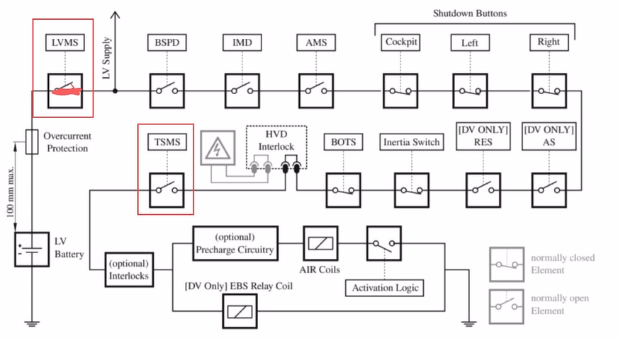
LVMS是最开始的开关，不开时，都不能通电
TSMS是上高压的最后的开关
惯性开关¶
惯性开关是用来解决装车之后来断电的
制动超行程开关¶
如果油管破损导致没有刹车油时，会使刹车的力很低
当刹车踩到了不该到达的问题，就会碰到急停的开关
安全回路的组成¶
- 有逻辑电路的
- BMS
- IMD
- BPSD
- 没有逻辑电路的
- 惯性开关
- 所有所需的互锁电路
- 两个主开关（LVMS,TSMS）
- 三个急停开关
- 制动超行程开关(BOTS)
整车控制器VCU¶
是车上最重要的软件控制
VCU是做什么的¶
在加速踏板的时候提到过VCU，接收电压等模拟量，将转换为数字量，给到电机控制器。起到模数转换的功能
io口¶
一个读，一个法，实现一个的点位控制另一个的电位。实现开关控制灯亮之类的。
AD转换¶
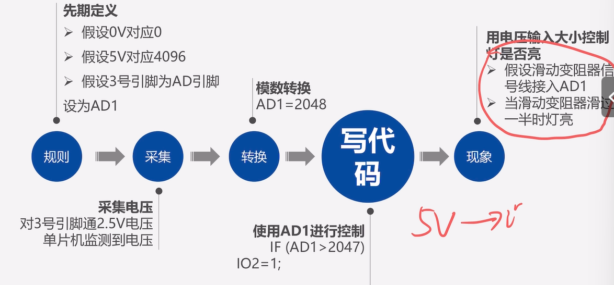
将连续的模拟信号转换成为离散的数字信号
当滑动变阻器调节，实现电压超过某个值时，就灯亮
关于PWM¶
如何使一辆车保持匀速行驶？
就是高频切换的io，将电压用想要的输出
长长短短的开关开关，得到想要的亮度或者是电压
CAN通信¶

就是四个单位通信，这里的线是很少的
使用总线的原理？并联？（加一个通信单位的时候，只需要加上两根线）
串口一次会传输8个字节(一个字节8位二进制，2为16进制)的数据，一个字节最大的值为255
例如：FF FF FF FF FF FF FF FF
DBC矩阵的解析¶
通过一次8字节的数据，每个字节传输不同的电压值，最后需要进行解析，解析到对应的电压值等等
华海的VCU编程¶
写程序，总的整车控制器，但是是不需要一行行敲代码的，可以实现单片机的一些功能
simulink¶
我们是在simulink中进行编写
打开matlab中的simulink进行建模
simulink可以进行电路仿真
- 在上面的库浏览器中找到想要的电路元件
- voltage——电源；resistor——电阻；
- 必须是同一个库里面的device才能相互连接
- 我们现在仿真所用的库是Simscape
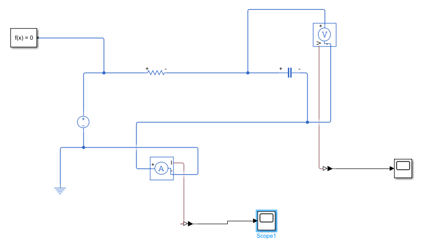
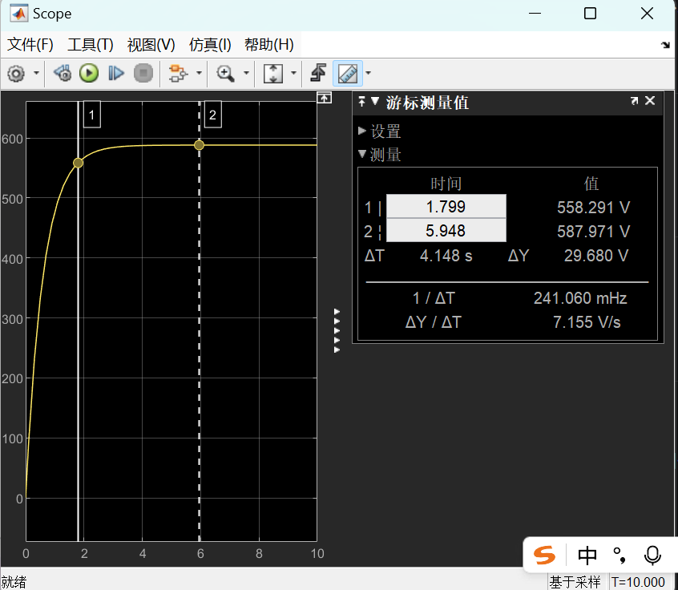
- 点击scope（示波器），进行测量
实例：实现预充电电路的仿真¶
在上面的库中
DBC¶
学会DBC解析，非常重要的
一帧can报文的组成¶
- 标准帧
- 扩展帧
一帧中会包含由8个字节，但是每个字节代表的含义是人为规定的
所以需要将数据解码为人能看懂的东西，或者将人看懂的东西转变为数据
DBC的解析¶
byte（字节）
bit（二进制位数，是最小的单位）
一个字节由8位二进制组成
一般使用矩阵的形式进行解析
练习¶
答题抢车号的方式进行车号的抢夺
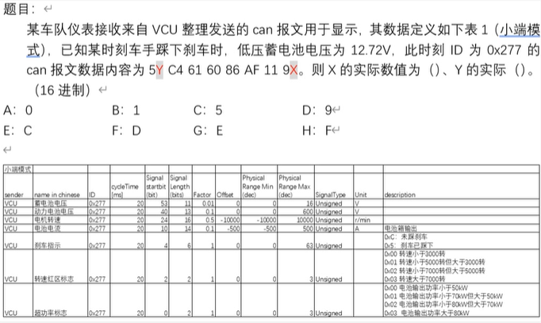
ID和can报文数据
ID的内容是0x277，can报文的内容是5Y C4 60 86 AF 11 9X
先收到的数字是排在左边的，符合正常的认知的。
- 先做表格：（下面的这张表格为对照的表格）图中的数字为对应的（相当于一个标识）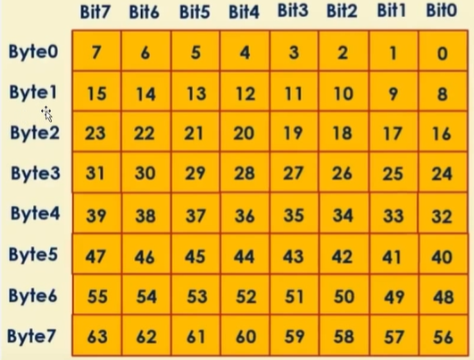
bit从右往左，byte从上往下
-
intel的格式是往下数的，信号的高位放在高字节的高位，信号的低位放在低字节的低位上（也就是从右上往左下越来越大，越是高位），就是按照表中的数就行
-
motorola模式
-
从数据的高位连到数据的低位
100 1ABC D000
100 1111 1000
可以看出，同一行是从左往右的，最开始的为低位，最后的为高位
名词的解释：
- start bit:开始起始的位置，在上面黄色的表中
- length bit：持续的长度
- factor：相当于比例尺，将二进制得到的数字乘以factor
- offset：将乘以后得数字加上这个数字，为实际的物理参数
- 有些数据还是得自己算的，但是有的数据可以由软件来求解的，不过最后还是要自己来从中获取的（DBC）
电气组培训¶
参考资料：大学生方程式，当年赛季的规则，技术手册
现在要进行的就是我们现在的新的
规则¶
电车规则
我们现在